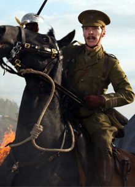

Бенедикт Камбербэтч и Колин Ферт сыграют в фильме о Первой мировой войне

Режиссер Сэм Мендес продолжает укомплектовывать команду актеров, которые примут участие в его фильме "1917", посвященном Первой мировой войне. Как сообщает издание Variety, к ней присоединились Бенедикт Камбербэтч, Марк Стронг, Колин Ферт, Эндрю Скотт и Ричард Мэдден.
Ранее сообщалось, что в картине также примет участие исполнитель роли Человека-паука Том Холлэнд. Утверждается, что в центре сюжета окажутся двое молодых солдат, а действие будет происходить в течение одного дня. У проекта весьма плотный съемочный график, так как он должен быть выпущен в ограниченный прокат уже 25 декабря 2019 года, а в широкий - 10 января 2020 года.Такой график предполагает, что создатели картины рассчитывают на ее участие в следующем наградном сезоне.
Одним из продюсеров фильма станет Стивен Спилберг, студия которого Amblin будет принимать участие в его создании. За прокат отвечает студия Universal.
Напомним, что Бенедикту Камбербэтчу уже доводилось ранее сниматься в фильмах о событиях Первой мировой войны. В частности актер принимал участие в ленте "Боевой конь", режиссером которой являлся Стивен Спилберг.